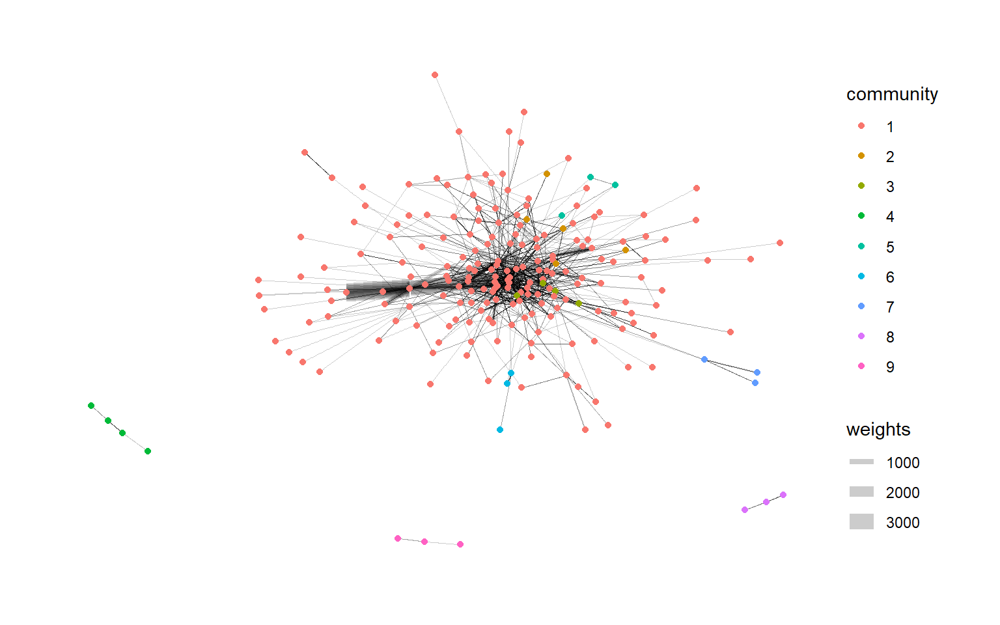

pacman::p_load(jsonlite,tidygraph,ggraph,visNetwork,tidyverse,lubridate,igraph,plotly)Take Home_Ex02
1. Background
The country of Oceanus has sought FishEye International’s help in identifying companies possibly engaged in illegal, unreported, and unregulated (IUU) fishing. As part of the collaboration, FishEye’s analysts received import/export data for Oceanus’ marine and fishing industries.
With reference to Mini-Challenge 2 of VAST Challenge 2023 and by using appropriate static and interactive statistical graphics methods, we will be helping FishEye to identify companies that may be engaged in illegal fishing.
2. Data Source
The data is taken from the Mini-Challenge 2 of VAST Challenge 2023. mc2_challenge_graph.json file will be used for the purpose of this exercise.
3. Data Preparation
3.1 Install and launching R packages
The code chunk below uses p_load() of pacman package to check if packages are installed in the computer. If they are, then they will be launched into R. The R packages installed are:
3.2 Loading the Data
fromJSON() of jsonlite package is used to import mc2_challenge_graph.json into R environment.
MC2 <- fromJSON("data/mc2_challenge_graph.json")3.3 Data Wrangling
3.3.1 Extracting the nodes
The code chunk is used to extract nodes data table from mc2_data list object and save the output in a tibble data frame object called mc2_nodes.
#Extract id, shpcountry and rcvcountry and make it as a tibble database. use select to choose the fields you want and reorganise the fields as you want
MC2_nodes <- as_tibble(MC2$nodes) %>%
select(id, shpcountry, rcvcountry)
head(MC2_nodes)# A tibble: 6 × 3
id shpcountry rcvcountry
<chr> <chr> <chr>
1 AquaDelight Inc and Son's Polarinda Oceanus
2 BaringoAmerica Marine Ges.m.b.H. <NA> <NA>
3 Yu gan Sea spray GmbH Industrial Oceanus Oceanus
4 FlounderLeska Marine BV <NA> <NA>
5 Olas del Mar Worldwide Oceanus Oceanus
6 French Crab S.p.A. Worldwide Kondanovia Utoporiana
Things to learn
select() is used not only to select the field needed but also to re-organise the sequence of the fields.
3.3.2 Extracting the edges
The code chunk is used to extract edges data table from mc2_data list object and save the output in a tibble data frame object called mc2_edges.
MC2_edges <- as_tibble(MC2$links) %>%
select(source, target, arrivaldate, hscode, valueofgoods_omu, valueofgoodsusd, volumeteu, weightkg)3.3.3 Reviewing the imported data
Next, we will examine the structure of the data frame using glimpse() of dplyr.
glimpse(MC2_nodes)Rows: 34,576
Columns: 3
$ id <chr> "AquaDelight Inc and Son's", "BaringoAmerica Marine Ges.m.b…
$ shpcountry <chr> "Polarinda", NA, "Oceanus", NA, "Oceanus", "Kondanovia", NA…
$ rcvcountry <chr> "Oceanus", NA, "Oceanus", NA, "Oceanus", "Utoporiana", NA, …glimpse(MC2_edges)Rows: 5,464,378
Columns: 8
$ source <chr> "AquaDelight Inc and Son's", "AquaDelight Inc and Son…
$ target <chr> "BaringoAmerica Marine Ges.m.b.H.", "BaringoAmerica M…
$ arrivaldate <chr> "2034-02-12", "2034-03-13", "2028-02-07", "2028-02-23…
$ hscode <chr> "630630", "630630", "470710", "470710", "470710", "47…
$ valueofgoods_omu <dbl> 141015, 141015, NA, NA, NA, NA, NA, NA, NA, NA, NA, N…
$ valueofgoodsusd <dbl> NA, NA, NA, NA, NA, NA, 87110, 188140, NA, 221110, 58…
$ volumeteu <dbl> 0, 0, 0, 0, 0, 0, 0, 0, 0, 0, 0, 0, 0, 0, 0, 0, 0, 0,…
$ weightkg <int> 4780, 6125, 10855, 11250, 11165, 11290, 9000, 19490, …
Warning
The output report of MC2_edges above reveals that the arrivaldate is treated as
3.3.4 Wrangling Time
MC2_edges <- MC2_edges %>%
mutate(ArrivalDate = ymd(arrivaldate)) %>%
mutate(Year = year(ArrivalDate)) %>%
mutate(Month = month(ArrivalDate)) %>%
mutate(Monthyear = paste(Year, Month, sep = "-")) %>%
select(source, target, ArrivalDate, Month, Year, hscode, valueofgoods_omu, volumeteu, weightkg, valueofgoodsusd) %>%
distinct()
head(MC2_edges)# A tibble: 6 × 10
source target ArrivalDate Month Year hscode valueofgoods_omu volumeteu
<chr> <chr> <date> <dbl> <dbl> <chr> <dbl> <dbl>
1 AquaDelight … Barin… 2034-02-12 2 2034 630630 141015 0
2 AquaDelight … Barin… 2034-03-13 3 2034 630630 141015 0
3 AquaDelight … -15045 2028-02-07 2 2028 470710 NA 0
4 AquaDelight … -15045 2028-02-23 2 2028 470710 NA 0
5 AquaDelight … -15045 2028-09-11 9 2028 470710 NA 0
6 AquaDelight … -15045 2028-10-09 10 2028 470710 NA 0
# ℹ 2 more variables: weightkg <int>, valueofgoodsusd <dbl>
Things to learn
mutate()is used 4 times to create 4 derive fields.ymd()of lubridate package is used to covert arrivaldate field from character data type into date data type.year()of lubridate package is used to convert the values in ArrivalDate field into year values.month() of lubridate package is used to convert the values in ArrivalDate field into month values.
select()is used not only to select the field needed but also to re-organise the sequent of the fields.
3.3.5 Checking if there is any missing values in the edge data table
The below chunck is used to calculate the percentage of NAs and 0s in the each column in the edge data table to see if we should use it for our analysis.
# Select specific columns in your dataset
selected_columns <- c("valueofgoods_omu", "volumeteu", "weightkg", "valueofgoodsusd")
## Calculate the percentage of NA values and zeros for the selected columns
total_rows <- nrow(MC2_edges)
na_percentage <- colSums(is.na(MC2_edges[, selected_columns])) / total_rows * 100
zero_percentage <- colSums(MC2_edges[, selected_columns] == 0, na.rm = TRUE) / total_rows * 100
# Combine the results into a data frame
result <- data.frame(NA_Percentage = na_percentage, Zero_Percentage = zero_percentage)
# Display the result
result NA_Percentage Zero_Percentage
valueofgoods_omu 99.99471 0.00000000
volumeteu 9.38167 75.91084870
weightkg 0.00000 0.90128491
valueofgoodsusd 54.36443 0.08169013
Warning
There is a high percentage of NA value in valueofgoods_omu and valueofgoodusd and a high percentage of zero in volumeteu, thus we will leave them out in our analysis, since we are unable to derive any useful insights.
3.3.6 Preparing the edges data table
Harmonized System (HS) codes are the identification codes given to goods for use in international trade. The HS codes are administered by the World Customs Organization (WCO) and are internationally accepted for use by customs authorities and companies to identify goods.
Since we are doing an analysis on the fishing industry, we have to first filter those hscodes that are fishing industry related products.
mc2_edges_aggregated <- MC2_edges %>%
filter(grepl("^30[1-8]|^2301|^160[4-5]|^1212|^1302|^1504|^151610|^151790", hscode)) %>% # filter out only those hscode that are fishing industry related products
group_by(source, target, hscode, Year) %>%
summarise(weights = n(), median_weight = median(weightkg)) %>%
filter(source!=target) %>%
filter(weights>10) %>%
ungroup()
mc2_edges_aggregated# A tibble: 12,408 × 6
source target hscode Year weights median_weight
<chr> <chr> <chr> <dbl> <int> <dbl>
1 " Direct Herring Company Transit" Estre… 306170 2031 12 21078.
2 "1 Limited Liability Company" Olas … 303630 2034 28 19830
3 "1 Limited Liability Company Trans… Selou… 160414 2030 12 9985
4 "1 Limited Liability Company Trans… Selou… 160414 2031 21 8815
5 "1 Limited Liability Company Trans… Selou… 160414 2032 16 6908.
6 "1 Limited Liability Company Trans… Selou… 160414 2033 54 6922.
7 "1 Limited Liability Company Trans… Selou… 160414 2034 28 6545
8 "1 Ltd. Liability Co Cargo" Himac… 306170 2028 68 10095
9 "1 Ltd. Liability Co Cargo" Himac… 306170 2029 59 19205
10 "1 Ltd. Liability Co Cargo" Himac… 306170 2030 26 17708.
# ℹ 12,398 more rowsNext, we take a look at what are the top fishing related products that has most transactions.
top_3_hscode <- mc2_edges_aggregated %>%
group_by(hscode) %>%
summarise(total_weights = sum(weights)) %>%
arrange(desc(total_weights)) %>%
slice_head(n = 3)
top_3_hscode# A tibble: 3 × 2
hscode total_weights
<chr> <int>
1 306170 122910
2 304620 81075
3 160414 63745The top 3 hscodes that has most number of transactions are ‘306170’,‘304620’ and ‘160414’. Thus, we will focus our analysis based on these 3 hscodes.
#Filter the mc2_edges_aggregated based on the top 3 hscode
mc2_edges_aggregated_top <- mc2_edges_aggregated %>%
filter(hscode == "306170"| hscode == "304620"| hscode == "160414")
#mc2_edges_aggregated_top
Things to learn
filter()is used to select records whereby hscode that fishing industry related products. The selection of hscode is referenced from the link heregroup_by()is used to aggregate values by source, target, hscode, Year.summarise()andn()are used to count the aggregated records.filter() is then used to perform the below selection,
- to select all records whereby source are not equal to target
3.3.7 Preparing the nodes data table
Instead of using the nodes data table extracted from mc2_data, we will prepare a new nodes data table by using the source and target fields of mc2_edges_aggregated data table. This is necessary to ensure that the nodes in nodes data tables include all the source and target values. Then we will reference to the MC2_nodes table to get the corresponding shpcountry and rcvcountry values.
id1_aggregated <- mc2_edges_aggregated_top %>%
select(source) %>%
rename(id = source)
id2_aggregated <- mc2_edges_aggregated_top %>%
select(target) %>%
rename(id = target)
mc2_nodes_extracted_aggregated <- rbind(id1_aggregated, id2_aggregated) %>%
distinct()
# Join with MC2_nodes by 'id to get the 'shpcountry', and 'rcvcountry'
mc2_nodes_extracted_aggregated <- mc2_nodes_extracted_aggregated %>%
left_join(MC2_nodes, by = "id")
head(mc2_nodes_extracted_aggregated)# A tibble: 6 × 3
id shpcountry rcvcountry
<chr> <chr> <chr>
1 " Direct Herring Company Transit" Mawazam Coralmarica
2 "1 Limited Liability Company Transport" Kondanovia Oceanus
3 "1 Ltd. Liability Co Cargo" Mawandia <NA>
4 "6 Ltd. Liability Co Transportation" Marebak Oceanus
5 "8 Aquamarine Limited Liability Company Holdings" Marebak Oceanus
6 "9 Marine biology Ltd Family" Mawazam <NA> 3.3.8 Building the tidygraph model
The code chunk below is then used to build the tidy graph data model.
mc2_graph <- tbl_graph(nodes = mc2_nodes_extracted_aggregated,
edges = mc2_edges_aggregated_top,
directed = TRUE)
mc2_graph# A tbl_graph: 930 nodes and 4670 edges
#
# A directed acyclic multigraph with 27 components
#
# A tibble: 930 × 3
id shpcountry rcvcountry
<chr> <chr> <chr>
1 " Direct Herring Company Transit" Mawazam Coralmarica
2 "1 Limited Liability Company Transport" Kondanovia Oceanus
3 "1 Ltd. Liability Co Cargo" Mawandia <NA>
4 "6 Ltd. Liability Co Transportation" Marebak Oceanus
5 "8 Aquamarine Limited Liability Company Holdings" Marebak Oceanus
6 "9 Marine biology Ltd Family" Mawazam <NA>
# ℹ 924 more rows
#
# A tibble: 4,670 × 6
from to hscode Year weights median_weight
<int> <int> <chr> <dbl> <int> <dbl>
1 1 543 306170 2031 12 21078.
2 2 544 160414 2030 12 9985
3 2 544 160414 2031 21 8815
# ℹ 4,667 more rows4. Network Metrics Analysis
4.1 Calculating the in, out and total degree centrality of the nodes
Degree centrality is a measure of immediate connection in a network. It could be interpreted as immediate reach in a social network.Eigenvector centrality is a measure that takes into account both the number of connections that a node or an actor has, and the degree of influence that the node’s immediate connections have in the entire network.
We will calculate the in, out and total degree centrality of the nodes, and use mutate() to create new columns to store these values.
Show the code
#| echo: false
#| fig-width: 3
#| fig-height: 3
# Calulate the in, out and total degree centrality and add 3 new columns via mutate() to store the values
mc2_graph <- mc2_graph %>%
activate(nodes) %>%
mutate(
in_degree_centrality = centrality_degree(mode = "in"),
out_degree_centrality = centrality_degree(mode = "out"),
degree_centrality = centrality_degree(mode = "all"),
eigen_centrality = centrality_eigen()
) %>%
mutate(combined_centrality = degree_centrality * eigen_centrality) %>%
arrange(desc(combined_centrality))
mc2_graph# A tbl_graph: 930 nodes and 4670 edges
#
# A directed acyclic multigraph with 27 components
#
# A tibble: 930 × 8
id shpcountry rcvcountry in_degree_centrality out_degree_centrality
<chr> <chr> <chr> <dbl> <dbl>
1 "Mar del Est… Merigrad Oceanus 400 0
2 "Caracola de… Puerto Sol Oceanus 363 0
3 "hǎi dǎn Cor… Marebak Oceanus 337 0
4 "Costa de la… Alverossia Oceanus 181 0
5 "Blue Horizo… Osterivar… <NA> 0 108
6 "Sea Breezes… Isliandor Coralmari… 0 117
# ℹ 924 more rows
# ℹ 3 more variables: degree_centrality <dbl>, eigen_centrality <dbl>,
# combined_centrality <dbl>
#
# A tibble: 4,670 × 6
from to hscode Year weights median_weight
<int> <int> <chr> <dbl> <int> <dbl>
1 788 158 306170 2031 12 21078.
2 279 7 160414 2030 12 9985
3 279 7 160414 2031 21 8815
# ℹ 4,667 more rowsBelow code chunk to find out the top 20 id that has a high combined degree and eigenvector centrality score.
Show the code
#| echo: false
#| fig-width: 3
#| fig-height: 3
#Select the top 20 IDs based on centrality value
top_20_ids <- mc2_graph %>%
activate(nodes) %>%
as_tibble() %>%
pull(id) %>%
head(20)
top_20_ids [1] "Mar del Este CJSC" "Caracola del Sol Services"
[3] "hǎi dǎn Corporation Wharf" "Costa de la Felicidad Shipping"
[5] "Blue Horizon Family &" "Sea Breezes S.A. de C.V. Freight "
[7] "Selous Game Reserve S.A. de C.V." "Playa de Arena OJSC Express"
[9] "Pao gan SE Seal" "Pao gan LC Freight "
[11] "AquaDelight N.V. Coral Reef" "Balkan Cat ОАО Transport"
[13] "Madagascar Coast AG Freight " "Shou gan Oyj Overseas"
[15] "Lake Tana & Son's" "Daniel Ferry N.V. Transit"
[17] "Caracola del Este Ltd. Liability Co" "Viento Azul N.V. Distribution"
[19] "Tripura Market S.A. de C.V." "The Sea Turtle GmbH & Co. KG" Bsed on the table above, we can see that the top 20 actors with high combined degree and eigen centrality value, include Mar del Este CJSC, Caracola del Sol Services and hǎi dǎn Corporation Wharf.
Things to learn
activate() is used to make the nodes of mc2_graph active to calculate the degree centrality.
mutate() function from the dplyr package is used to add two new columns, in_degree_centrality and out_degree_centrality, to the nodes of the mc2_graph object
4.2 Determining the type of entity the id belongs to
#Specify what entity the id could be
mc2_graph <- mc2_graph %>%
mutate(
node_type = case_when(
in_degree_centrality == 0 & out_degree_centrality > 0 ~ "vessels",
in_degree_centrality > 0 & out_degree_centrality == 0 ~ "transshipment",
in_degree_centrality > 0 & out_degree_centrality > 0 ~ "vessels/transshipment"
)
)4.2.1 Counting number of entities for each business type
Show the code
#| echo: false
#| fig-width: 3
#| fig-height: 3
#Count the how many id belong to each entity
vessels_count <- mc2_graph %>%
activate(nodes) %>%
as_tibble() %>%
filter(node_type == "vessels") %>%
nrow()
transhipment_count <- mc2_graph %>%
activate(nodes) %>%
as_tibble() %>%
filter(node_type == "transshipment") %>%
nrow()
both_count <- mc2_graph %>%
activate(nodes) %>%
as_tibble() %>%
filter(node_type == "vessels/transshipment") %>%
nrow()
# cat("Number of vessels:", vessels_count, "\n")
# cat("Number of transshipment:", transhipment_count, "\n")
# cat("Number of vessels/transshipment:", both_count, "\n")After cleaning up the data, we have a total of 529 vessels, 388 transshipment and 13 companies that may be either a vessel or transshipment to work with for our analysis.
Note
If in_degree_centrality == 0, it means that the company is most likely a pure exporter and highly likely a vessel.
If out_degree_centrality == 0, it means that the company is most likely a pure importer and highly likely involved in transshipment.
If in_degree_centrality > 0 & out_degree_centrality > 0, the company is most likely both a vessel or transshipment.
4.3 Visualising the network graph with ggraph
Show the code
#| echo: false
#| fig-width: 3
#| fig-height: 3
ggraph(mc2_graph,
layout = "fr") +
geom_edge_link(aes(width=weights),
alpha=0.2) +
geom_node_point(aes(colour = node_type)) +
theme_graph() +
labs(title = "Network graph of global transhipment activities")4.4 Flag Based Network
To gain a better understanding of the prevalence of the types of flags in the transshipment events, we can find out which country the vessels tends to be most often associated with when shipping.
And we can see that vessels tend to ship to Merigrad and Marebak.
Show the code
#| echo: false
#| fig-width: 3
#| fig-height: 3
country_id_counts_shp <- mc2_graph %>%
activate(nodes) %>%
as_tibble() %>%
filter(in_degree_centrality == 0) %>% # filter out for the vessels
group_by(shpcountry) %>%
summarise(id_count = n_distinct(id)) %>%
arrange(desc(id_count))
head(country_id_counts_shp)# A tibble: 6 × 2
shpcountry id_count
<chr> <int>
1 Merigrad 97
2 Marebak 78
3 Vesperanda 54
4 Mawazam 52
5 Osterivaria 49
6 Arreciviento 31Also, we can see that for transshipment, companies are most often associated with Oceanus when receiving their products.
Show the code
#| echo: false
#| fig-width: 3
#| fig-height: 3
country_id_counts_rcv <- mc2_graph %>%
activate(nodes) %>%
as_tibble() %>%
filter(out_degree_centrality == 0) %>% # filter out for the vessels
group_by(rcvcountry) %>%
summarise(id_count = n_distinct(id)) %>%
arrange(desc(id_count))
head(country_id_counts_rcv)# A tibble: 6 × 2
rcvcountry id_count
<chr> <int>
1 Oceanus 362
2 Coralmarica 13
3 Sol y Oceana 5
4 Utoporiana 2
5 Icarnia 1
6 Kethilim 14.5 Top 20 transshipment companies trading frequencies
Check out the trading frequencies of the top 20 transshipment companies trading frequencies over the years. These top 20 companies are those who has high in-degree centrality.
We can see that the total transactions fluctuates more for Caracola del Sol Services, Mar del Este CJSC and Pao gan SE Seal.
Show the code
#| echo: false
#| fig-width: 3
#| fig-height: 3
#Select the top 20 IDs based on centrality value
top_20_ids <- mc2_graph %>%
activate(nodes) %>%
as_tibble() %>%
arrange(desc(in_degree_centrality)) %>%
pull(id) %>%
head(20)
# Filter the mc2_edges_aggregated_top dataframe
filtered_edges_entities <- mc2_edges_aggregated_top %>%
filter(target %in% top_20_ids) %>%
group_by(Year, target) %>%
summarise(total_weight = sum(weights))
# Plot the aggregated weights
p <- ggplot(filtered_edges_entities, aes(x = Year, y = total_weight, color = target)) +
geom_line() +
geom_point() +
labs(x = "Year", y = "Total transactions", title = "Number of Transactions by Year") +
scale_color_discrete(name = "Target Entity")
ggplotly(p)4.6 Community Detection Analysis
Next, we will do a community detection analysis using the group_edge_betweenness function. It works by iteratively removing the edges with the highest betweenness centrality, which is a measure of the number of shortest paths that pass through an edge. By removing these edges, the graph is divided into clusters or communities.
Show the code
#| echo: false
#| fig-width: 3
#| fig-height: 3
set.seed(123)
mc2_graph <- mc2_graph %>%
mutate(community = as.factor(group_edge_betweenness(weights = weights, directed = TRUE)))
g_mcgraph <- mc2_graph %>%
activate(nodes) %>%
group_by(community) %>%
filter(n() > 2) %>% #filter the community size > 2
ungroup() %>%
ggraph(layout = "fr") +
geom_edge_link(aes(width = weights),
alpha = 0.2,
arrows = "to") +
scale_edge_width(range = c(0.1, 5)) +
geom_node_point(aes(colour = community)) +
theme_graph()
g_mcgraph
As seen from the community detection graph above, after filtering for community size > 2, there are 9 community shown, and looking at the connectivity and density of the graph, it seems that community 1, seems to be the most densely populated. Thus, for the following analysis, we shall focus on community 1.
The code chunk below can be used to find out which node has the highest in-degree centrality for in community 1. And we can see that within community 1, Mar del Este CJSC has the highest in-degree centrality score.
Show the code
#| echo: false
#| fig-width: 3
#| fig-height: 3
indegree_community <- mc2_graph %>%
activate(nodes) %>%
filter(community == 1) %>%
mutate(in_degree_centrality_community = centrality_degree(mode = "in")) %>%
arrange(desc(in_degree_centrality_community)) %>%
as_tibble()
head(indegree_community, 5)# A tibble: 5 × 11
id shpcountry rcvcountry in_degree_centrality out_degree_centrality
<chr> <chr> <chr> <dbl> <dbl>
1 Mar del Este… Merigrad Oceanus 400 0
2 hǎi dǎn Corp… Marebak Oceanus 337 0
3 Caracola del… Puerto Sol Oceanus 363 0
4 Costa de la … Alverossia Oceanus 181 0
5 Pao gan SE S… Alverossia Oceanus 150 0
# ℹ 6 more variables: degree_centrality <dbl>, eigen_centrality <dbl>,
# combined_centrality <dbl>, node_type <chr>, community <fct>,
# in_degree_centrality_community <dbl>4.7 Plotting the visNetwork graph of transshipment leader
Next, we will further investigate our highest transshipment node, Mar del Este CJSC, by plotting its network graph over the years from 2028-2034 to see if we can find any insights.
Show the code
#| echo: false
#| fig-width: 3
#| fig-height: 3
# Filter the year and id in edges and the corresponding id
filtered_graph_2028 <- mc2_graph %>%
activate(edges) %>%
filter(Year == 2028, to == 1)
unique_ids_2028 <- unique(c(filtered_graph_2028 %>%
activate(edges) %>%
pull(from),
filtered_graph_2028 %>%
activate(edges) %>%
pull(to)))
filtered_graph_2028 <- filtered_graph_2028 %>%
activate(nodes) %>%
filter(row_number() %in% unique_ids_2028) %>%
as_tbl_graph()
edges_df_2028 <- filtered_graph_2028 %>%
activate(edges) %>%
as_tibble()
nodes_df_2028 <- filtered_graph_2028 %>%
activate(nodes) %>%
as_tibble() %>%
rename(label = id) %>%
mutate(id=row_number()) %>%
select(everything()) %>%
relocate(id, .before = label)
nodes_df_2028<- nodes_df_2028 %>%
rename(group = node_type)
# Plot the network graph with labeled nodes using visNetwork
vis_2028 <- visNetwork(nodes_df_2028, edges_df_2028, submain = list(text = "Network Graph of Mar del Este CJSC in 2028 ",
style = "font-family:Comic Sans MS;color:#000000;font-size:15px;text-align:center;")) %>%
visIgraphLayout(layout = "layout_with_fr") %>%
visEdges(arrows = "to") %>%
visOptions(
highlightNearest = TRUE,
nodesIdSelection = TRUE,
) %>%
visLegend() %>%
visInteraction(zoomView = TRUE, dragNodes = TRUE, dragView = TRUE, navigationButtons = TRUE)
vis_2028Show the code
#| echo: false
#| fig-width: 3
#| fig-height: 3
# Filter the year and id in edges and the corresponding id
filtered_graph_2029 <- mc2_graph %>%
activate(edges) %>%
filter(Year == 2029, to == 1)
unique_ids_2029 <- unique(c(filtered_graph_2029 %>%
activate(edges) %>%
pull(from),
filtered_graph_2029 %>%
activate(edges) %>%
pull(to)))
filtered_graph_2029 <- filtered_graph_2029 %>%
activate(nodes) %>%
filter(row_number() %in% unique_ids_2029) %>%
as_tbl_graph()
edges_df_2029 <- filtered_graph_2029 %>%
activate(edges) %>%
as_tibble()
nodes_df_2029 <- filtered_graph_2029 %>%
activate(nodes) %>%
as_tibble() %>%
rename(label = id) %>%
mutate(id=row_number()) %>%
select(everything()) %>%
relocate(id, .before = label)
nodes_df_2029<- nodes_df_2029 %>%
rename(group = node_type)
# Plot the network graph with labeled nodes using visNetwork
vis_2029 <- visNetwork(nodes_df_2029, edges_df_2029, submain = list(text = "Network Graph of Mar del Este CJSC in 2029 ",
style = "font-family:Comic Sans MS;color:#000000;font-size:15px;text-align:center;")) %>%
visIgraphLayout(layout = "layout_with_fr") %>%
visEdges(arrows = "to") %>%
visOptions(
highlightNearest = TRUE,
nodesIdSelection = TRUE,
) %>%
visLegend() %>%
visInteraction(zoomView = TRUE, dragNodes = TRUE, dragView = TRUE, navigationButtons = TRUE)
vis_2029Show the code
#| echo: false
#| fig-width: 3
#| fig-height: 3
filtered_graph_2030 <- mc2_graph %>%
activate(edges) %>%
filter(Year == 2030, to == 1)
unique_ids_2030 <- unique(c(filtered_graph_2030 %>%
activate(edges) %>%
pull(from),
filtered_graph_2030 %>%
activate(edges) %>%
pull(to)))
filtered_graph_2030 <- filtered_graph_2030 %>%
activate(nodes) %>%
filter(row_number() %in% unique_ids_2030) %>%
as_tbl_graph()
edges_df_2030 <- filtered_graph_2030 %>%
activate(edges) %>%
as_tibble()
nodes_df_2030 <- filtered_graph_2030 %>%
activate(nodes) %>%
as_tibble() %>%
rename(label = id) %>%
mutate(id=row_number()) %>%
select(everything()) %>%
relocate(id, .before = label)
nodes_df_2030<- nodes_df_2030 %>%
rename(group = node_type)
# Plot the network graph with labeled nodes using visNetwork
vis_2030 <- visNetwork(nodes_df_2030, edges_df_2030, submain = list(text = "Network Graph ofMar del Este CJSC in 2030 ",
style = "font-family:Comic Sans MS;color:#000000;font-size:15px;text-align:center;")) %>%
visIgraphLayout(layout = "layout_with_fr") %>%
visEdges(arrows = "to") %>%
visOptions(
highlightNearest = TRUE,
nodesIdSelection = TRUE,
) %>%
visLegend() %>%
visInteraction(zoomView = TRUE, dragNodes = TRUE, dragView = TRUE, navigationButtons = TRUE)
vis_2030Show the code
#| echo: false
#| fig-width: 3
#| fig-height: 3
filtered_graph_2031 <- mc2_graph %>%
activate(edges) %>%
filter(Year == 2031, to == 1)
unique_ids_2031 <- unique(c(filtered_graph_2031 %>%
activate(edges) %>%
pull(from),
filtered_graph_2031 %>%
activate(edges) %>%
pull(to)))
filtered_graph_2031 <- filtered_graph_2031 %>%
activate(nodes) %>%
filter(row_number() %in% unique_ids_2031) %>%
as_tbl_graph()
edges_df_2031 <- filtered_graph_2031 %>%
activate(edges) %>%
as_tibble()
nodes_df_2031 <- filtered_graph_2031 %>%
activate(nodes) %>%
as_tibble() %>%
rename(label = id) %>%
mutate(id=row_number()) %>%
select(everything()) %>%
relocate(id, .before = label)
nodes_df_2031<- nodes_df_2031 %>%
rename(group = node_type)
# Plot the network graph with labeled nodes using visNetwork
vis_2031 <- visNetwork(nodes_df_2031, edges_df_2031, submain = list(text = "Network Graph ofMar del Este CJSC in 2031 ",
style = "font-family:Comic Sans MS;color:#000000;font-size:15px;text-align:center;")) %>%
visIgraphLayout(layout = "layout_with_fr") %>%
visEdges(arrows = "to") %>%
visOptions(
highlightNearest = TRUE,
nodesIdSelection = TRUE,
) %>%
visLegend() %>%
visInteraction(zoomView = TRUE, dragNodes = TRUE, dragView = TRUE, navigationButtons = TRUE)
vis_2031Show the code
#| echo: false
#| fig-width: 3
#| fig-height: 3
filtered_graph_2032 <- mc2_graph %>%
activate(edges) %>%
filter(Year == 2032, to == 1)
unique_ids_2032 <- unique(c(filtered_graph_2032 %>%
activate(edges) %>%
pull(from),
filtered_graph_2032 %>%
activate(edges) %>%
pull(to)))
filtered_graph_2032 <- filtered_graph_2032 %>%
activate(nodes) %>%
filter(row_number() %in% unique_ids_2032) %>%
as_tbl_graph()
edges_df_2032 <- filtered_graph_2032 %>%
activate(edges) %>%
as_tibble()
nodes_df_2032 <- filtered_graph_2032 %>%
activate(nodes) %>%
as_tibble() %>%
rename(label = id) %>%
mutate(id=row_number()) %>%
select(everything()) %>%
relocate(id, .before = label)
nodes_df_2032<- nodes_df_2032 %>%
rename(group = node_type)
# Plot the network graph with labeled nodes using visNetwork
vis_2032 <- visNetwork(nodes_df_2032, edges_df_2032, submain = list(text = "Network Graph ofMar del Este CJSC in 2032 ",
style = "font-family:Comic Sans MS;color:#000000;font-size:15px;text-align:center;")) %>%
visIgraphLayout(layout = "layout_with_fr") %>%
visEdges(arrows = "to") %>%
visOptions(
highlightNearest = TRUE,
nodesIdSelection = TRUE,
) %>%
visLegend() %>%
visInteraction(zoomView = TRUE, dragNodes = TRUE, dragView = TRUE, navigationButtons = TRUE)
vis_2032#2033
Show the code
#| echo: false
#| fig-width: 3
#| fig-height: 3
filtered_graph_2033 <- mc2_graph %>%
activate(edges) %>%
filter(Year == 2033, to == 1)
unique_ids_2033 <- unique(c(filtered_graph_2033 %>%
activate(edges) %>%
pull(from),
filtered_graph_2033 %>%
activate(edges) %>%
pull(to)))
filtered_graph_2033 <- filtered_graph_2033 %>%
activate(nodes) %>%
filter(row_number() %in% unique_ids_2033) %>%
as_tbl_graph()
edges_df_2033 <- filtered_graph_2033 %>%
activate(edges) %>%
as_tibble()
nodes_df_2033 <- filtered_graph_2033 %>%
activate(nodes) %>%
as_tibble() %>%
rename(label = id) %>%
mutate(id=row_number()) %>%
select(everything()) %>%
relocate(id, .before = label)
nodes_df_2033<- nodes_df_2033 %>%
rename(group = node_type)
# Plot the network graph with labeled nodes using visNetwork
vis_2033 <- visNetwork(nodes_df_2033, edges_df_2033, submain = list(text = "Network Graph ofMar del Este CJSC in 2033 ",
style = "font-family:Comic Sans MS;color:#000000;font-size:15px;text-align:center;")) %>%
visIgraphLayout(layout = "layout_with_fr") %>%
visEdges(arrows = "to") %>%
visOptions(
highlightNearest = TRUE,
nodesIdSelection = TRUE,
) %>%
visLegend() %>%
visInteraction(zoomView = TRUE, dragNodes = TRUE, dragView = TRUE, navigationButtons = TRUE)
vis_2033Show the code
#| echo: false
#| fig-width: 3
#| fig-height: 3
filtered_graph_2034 <- mc2_graph %>%
activate(edges) %>%
filter(Year == 2034, to == 1)
unique_ids_2034 <- unique(c(filtered_graph_2034 %>%
activate(edges) %>%
pull(from),
filtered_graph_2034 %>%
activate(edges) %>%
pull(to)))
filtered_graph_2034 <- filtered_graph_2034 %>%
activate(nodes) %>%
filter(row_number() %in% unique_ids_2034) %>%
as_tbl_graph()
edges_df_2034 <- filtered_graph_2034 %>%
activate(edges) %>%
as_tibble()
nodes_df_2034 <- filtered_graph_2034 %>%
activate(nodes) %>%
as_tibble() %>%
rename(label = id) %>%
mutate(id=row_number()) %>%
select(everything()) %>%
relocate(id, .before = label)
nodes_df_2034<- nodes_df_2034 %>%
rename(group = node_type)
# Plot the network graph with labeled nodes using visNetwork
vis_2034 <- visNetwork(nodes_df_2034, edges_df_2034, submain = list(text = "Network Graph ofMar del Este CJSC in 2034 ",
style = "font-family:Comic Sans MS;color:#000000;font-size:15px;text-align:center;")) %>%
visIgraphLayout(layout = "layout_with_fr") %>%
visEdges(arrows = "to") %>%
visOptions(
highlightNearest = TRUE,
nodesIdSelection = TRUE,
) %>%
visLegend() %>%
visInteraction(zoomView = TRUE, dragNodes = TRUE, dragView = TRUE, navigationButtons = TRUE)
vis_20344.7.1 Summary of the changes of transshipment leader over the years
Below is the code chunk to find if there is any missing nodes or addition of new nodes over the different time period:
Show the code
#| echo: false
#| fig-width: 3
#| fig-height: 3
# Diff 2028-2029
# Check if all nodes in nodes_df_2028 are present in nodes_df_2029
missing_nodes_1 <- setdiff(nodes_df_2028$id, nodes_df_2029$id)
# Get the corresponding names for the missing nodes
missing_node_names_1 <- nodes_df_2028$label[nodes_df_2028$id %in% missing_nodes_1]
# Identify any new nodes in nodes_df_2029
new_nodes_1 <- setdiff(nodes_df_2029$id, nodes_df_2028$id)
# Get the corresponding names for the missing nodes
new_node_names_1 <- nodes_df_2029$label[nodes_df_2029$id %in% new_nodes_1]
# # Print the missing node names with a comma after each label found
# cat("Missing nodes: ", paste(missing_node_names_1, collapse = ", "), "\n")
# # Print the new node names with a comma after each label found
# cat("New nodes: ", paste(new_node_names_1, collapse = ", "), "\n")
#Diff 2029-2030
# Check if all nodes in nodes_df_2020 are present in nodes_df_2030
missing_nodes_2 <- setdiff(nodes_df_2029$id, nodes_df_2030$id)
# Get the corresponding names for the missing nodes
missing_node_names_2 <- nodes_df_2029$label[nodes_df_2029$id %in% missing_nodes_2]
# Identify any new nodes in nodes_df_2030
new_nodes_2 <- setdiff(nodes_df_2030$id, nodes_df_2029$id)
# Get the corresponding names for the missing nodes
new_node_names_2 <- nodes_df_2030$label[nodes_df_2030$id %in% new_nodes_2]
# # Print the missing node names with a comma after each label found
# cat("Missing nodes: ", paste(missing_node_names_2, collapse = ", "), "\n")
# # Print the new node names with a comma after each label found
# cat("New nodes: ", paste(new_node_names_2, collapse = ", "), "\n")
# Diff 2030-2031
# Check if all nodes in nodes_df_2030 are present in nodes_df_2031
missing_nodes_3 <- setdiff(nodes_df_2030$id, nodes_df_2031$id)
# Get the corresponding names for the missing nodes
missing_node_names_3 <- nodes_df_2030$label[nodes_df_2030$id %in% missing_nodes_3]
# Identify any new nodes in nodes_df_2031
new_nodes_3 <- setdiff(nodes_df_2031$id, nodes_df_2030$id)
# Get the corresponding names for the missing nodes
new_node_names_3 <- nodes_df_2031$label[nodes_df_2031$id %in% new_nodes_3]
# # Print the missing node names with a comma after each label found
# cat("Missing nodes: ", paste(missing_node_names_3, collapse = ", "), "\n")
# # Print the new node names with a comma after each label found
# cat("New nodes: ", paste(new_node_names_3, collapse = ", "), "\n")
# Diff 2031-2032
# Check if all nodes in nodes_df_2031 are present in nodes_df_2032
missing_nodes_4 <- setdiff(nodes_df_2031$id, nodes_df_2032$id)
# Get the corresponding names for the missing nodes
missing_node_names_4 <- nodes_df_2031$label[nodes_df_2031$id %in% missing_nodes_4]
# Identify any new nodes in nodes_df_2032
new_nodes_4 <- setdiff(nodes_df_2032$id, nodes_df_2031$id)
# Get the corresponding names for the missing nodes
new_node_names_4 <- nodes_df_2032$label[nodes_df_2032$id %in% new_nodes_4]
# # Print the missing node names with a comma after each label found
# cat("Missing nodes: ", paste(missing_node_names_4, collapse = ", "), "\n")
# # Print the new node names with a comma after each label found
# cat("New nodes: ", paste(new_node_names_4, collapse = ", "), "\n")
# Diff 2033-2034
# Check if all nodes in nodes_df_2033 are present in nodes_df_2034
missing_nodes_5 <- setdiff(nodes_df_2033$id, nodes_df_2034$id)
# Get the corresponding names for the missing nodes
missing_node_names_5 <- nodes_df_2033$label[nodes_df_2033$id %in% missing_nodes_5]
# Identify any new nodes in nodes_df_2034
new_nodes_5 <- setdiff(nodes_df_2034$id, nodes_df_2033$id)
# Get the corresponding names for the missing nodes
new_node_names_5 <- nodes_df_2034$label[nodes_df_2034$id %in% new_nodes_5]
# # Print the missing node names with a comma after each label found
# cat("Missing nodes: ", paste(missing_node_names_5, collapse = ", "), "\n")
# # Print the new node names with a comma after each label found
# cat("New nodes: ", paste(new_node_names_5, collapse = ", "), "\n")| Year | Findings |
|---|---|
| 2028 and 2029 | 6 Missing nodes:
|
| 2029 - 2030 | 5 New nodes:
|
| 2030 - 2031 | 13 Missing nodes:
|
| 2031 - 2032 | 20 New nodes:
|
| 2032 - 2034 | 10 Missing nodes:
|
Also, we can see from the networkgraph that in 2028, Marine Mates NV Worldwide and ReefRider Foods Lte Corporation Family supplies goods to Mar del Este CSJC but disappears in 2029. And in 2032, there are 2 new suppliers, The Salty Dog Limited Liability Company and Turkish Salmon A/S Marine, however, both disappeared in 2034.
5. References
A. Petrossian,G., Barthuly,B.,C. Sosnowski,M.(2022).Identifying Central Carriers and Detecting Key Communities Within the Global Fish Transshipment Networks. Retrieved June 4, 2032, from https://www.frontiersin.org/articles/10.3389/fmars.2022.798893/full
J. Park,A.,Z. Stamato,S.(2020).Social Network Analysis of Global Transshipment: A Framework for Discovering Illegal Fishing.
Datastorm(nd).visNetowork,an R package for an interactive network visualistion. Retrieved June 4, 2032, from https://datastorm-open.github.io/visNetwork/edges.html
https://tidygraph.data-imaginist.com/index.html https://ona-book.org/vertex-importance.html 6 Vertex Importance and Centrality | Handbook of Graphs and Networks in People Analytics (ona-book.org)